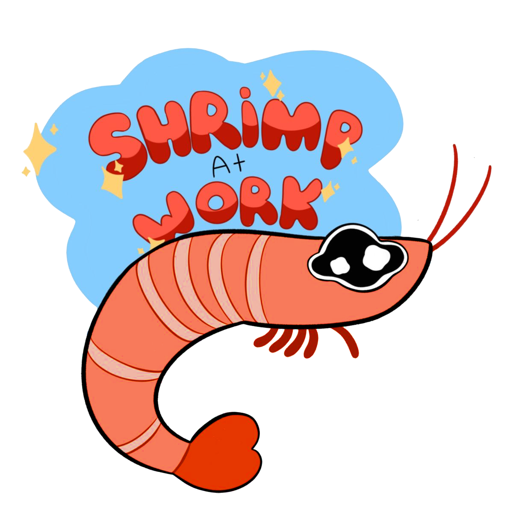

Conocenos
Quienes somos?
El rincón del camarón es un blog sin fines de lucro que solo quiere recopilar la mayor cantidad de tutoriales y ejercicios que puedan ser de ayuda para los artistas mas principiantes.
Nuestro objetivo? simple!
Queremos seguir motivando la creatividad humana y mostrar que cualquiera puede ser una gran artista! solo necesita las guía necesaria y aquí se a podemos ofrecer.
